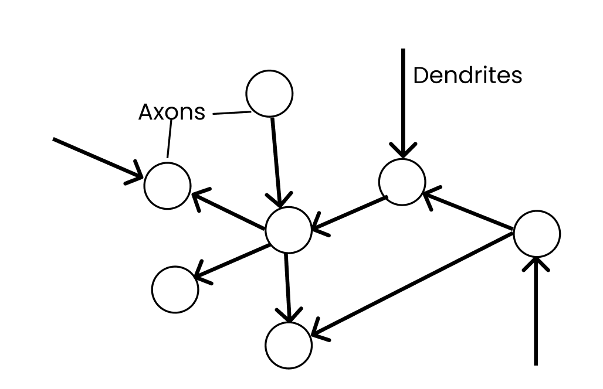
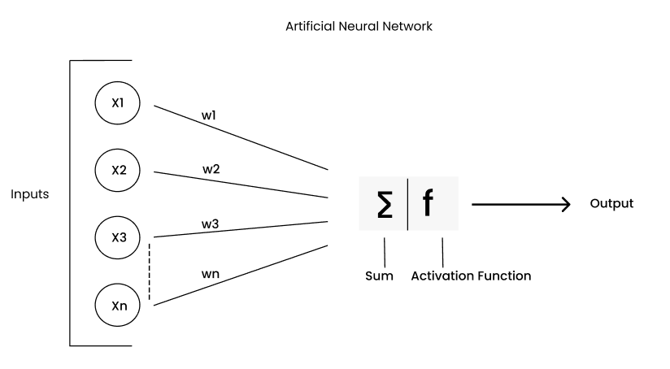
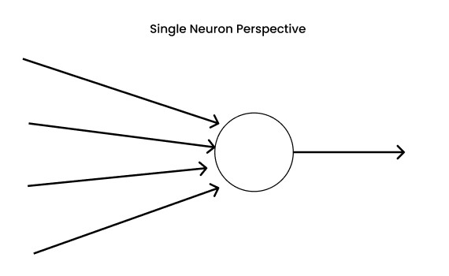
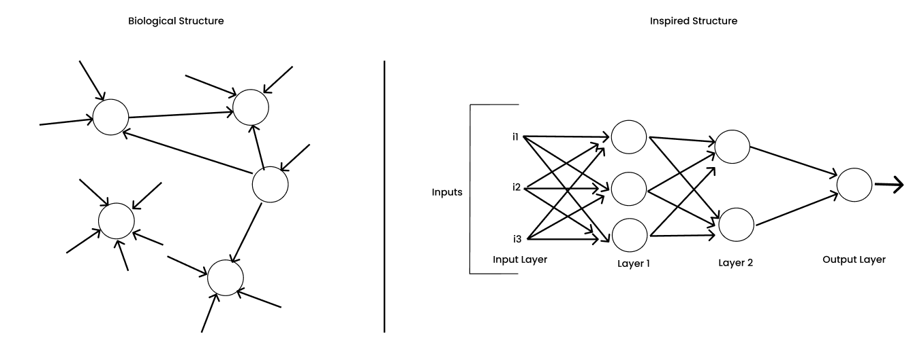
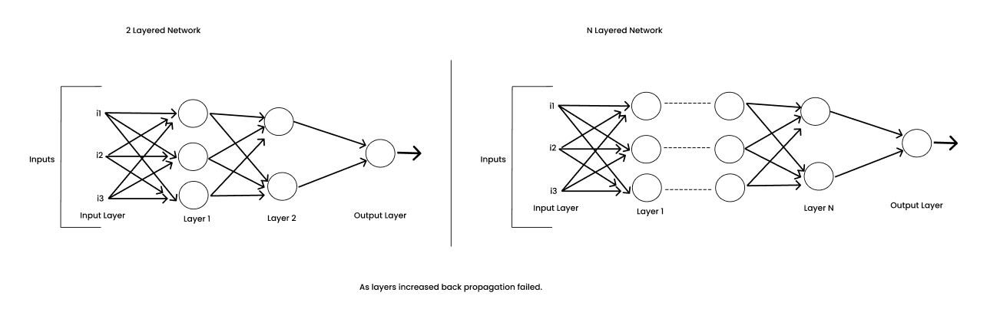
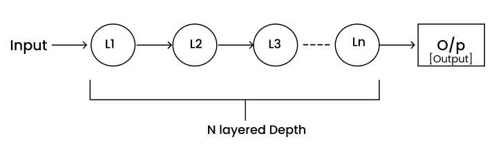

05 · Deep Learning
Deep learning began with a single neuron
The first half of this week was about data. The second half is about the models that learn from it. Every neural network you will train in this course, from the MNIST MLP to a Transformer, descends from one idea first built in 1957: a single artificial neuron.
Why start with history?
Neural networks have been declared the future, then declared dead, then declared the future again. Knowing why each swing happened explains the design of modern networks. Almost every "trick" you will meet (hidden layers, non-linear activations, backpropagation, GPUs, big datasets) exists because an earlier version hit a wall.
Since 2012, the area called deep learning has driven most of the AI applications you use. But the story starts more than half a century earlier.
1957: Rosenblatt's perceptron
The perceptron is the first and simplest model we can call a neural network. It was conceived in 1957 by Frank Rosenblatt, a psychologist at the Cornell Aeronautical Laboratory, and demonstrated publicly in 1958.
It takes several inputs, weights each one by how important it is, adds them up, and fires (outputs 1) if the total crosses a threshold. Learning means adjusting the weights from labelled examples.
It was the first machine that learned its own parameters from data instead of being programmed with rules. It is also very close to logistic regression: same weighted sum, different output function and loss. Page 07 compares the two in detail.
The perceptron arrived in the years after World War II, when researchers such as Alan Turing were asking what intelligence is and whether the new "modern computers" of the 1940s and 1950s could have it.
Biological inspiration: the neuron
Many breakthroughs borrow from biology, and neural networks are no exception. Humans and animals show perception, reflexes, memory and decision-making, and much of that is attributed to networks of neurons, the basic building blocks of the brain. Researchers in the 1950s understood neurons only roughly, but that rough picture was enough to start:
- A neuron receives electrical signals from other neurons through its dendrites.
- It does some computation inside its cell body.
- If the input is strong enough, it sends an output pulse along its axon to other neurons.

Rosenblatt's question was: can we capture this in a simple mathematical form? The answer became the artificial neuron. Inputs x₁ … xₙ play the role of signals arriving at the dendrites. Each input gets a weight, because not all information is equally important. The weighted inputs are summed and passed through a function:

From one neuron to networks
A neuron in the brain never works alone. It sits inside a dense web of connections. That raised the obvious question: why stop at one artificial neuron?


The push toward multi-layer networks was also forced by a hard limit. A single perceptron can only draw one straight line (a hyperplane) through the data, so it cannot solve problems that are not linearly separable, such as XOR. Marvin Minsky and Seymour Papert made this limit famous in their 1969 book Perceptrons. Stacking neurons into layers solves XOR, but in 1969 nobody had a practical way to train the hidden neurons.
1986: backpropagation makes networks trainable
In 1986, David Rumelhart, Geoffrey Hinton and Ronald Williams published "Learning representations by back-propagating errors" in Nature. It showed how to train every weight in a multi-layer network, including the hidden ones.
Backpropagation is the chain rule of calculus applied layer by layer. The error at the output is sent backward through the network, and each weight learns how much it contributed to that error.
For the first time there were networks of neurons that could actually be trained. The whole field of artificial neural networks took off from here. Hinton, one of the authors, is often called a "godfather of AI".
Hype and the AI winters
Neural networks have gone through two big cycles of hype followed by disappointment:
- 1970sFirst winter. After Perceptrons (1969) and broad cuts to AI funding, research on neural networks shrank to a handful of labs.
- 1986Revival. Backpropagation brings new excitement and new promises of machines that think like people.
- Late 1980s to 2000sSecond slump. There was not enough data or computing power to train large networks. Promises outran results, funding dried up, and practitioners moved to methods that worked better at the time: support vector machines (a favourite in the late 1990s), random forests and gradient-boosted trees. These dominated until roughly 2009.
Why deeper networks broke backprop
Brains rely on many layers of neural connections for thinking, memory and recall. So to build powerful models we want deep networks, meaning many layers. But in the late 1980s and 1990s, backpropagation kept failing as layers were added.


The main culprit was the vanishing gradient. Backprop multiplies one derivative per layer, and the sigmoid's derivative is at most 0.25. Through ten layers the gradient can shrink by a factor of about a million, so the early layers barely learn. Page 08 shows how ReLU fixed this.
2006 and 2012: the comeback
2006: Hinton shows deep networks can be trained
While most of the field moved on, Hinton kept working on neural networks for two decades after 1986. In 2006 he and his co-authors published "A fast learning algorithm for deep belief nets", which trained deep networks one layer at a time before fine-tuning the whole stack. It laid the foundation for the deep learning we study today, but there was little hype and few people paid attention at first.
2012: the ImageNet moment
The turning point came at the 2012 ImageNet Large Scale Visual Recognition Challenge, with about 1.2 million labelled training images in 1,000 categories. A deep convolutional network trained on GPUs (AlexNet, from Hinton's group) beat every traditional computer-vision method by a wide margin. The research world took deep learning seriously almost overnight.
Google, Facebook, Amazon and top universities then invested heavily in three things: computing power (especially GPUs), researchers, and the huge datasets these companies held. That combination is what made the last decade of AI possible.
Deep learning's impact
| Area | What deep learning does |
|---|---|
| Self-driving cars | Object detection, path planning and decision-making (Tesla, Waymo) |
| Voice assistants | Understanding speech and natural language (Siri, Alexa, Google Assistant) |
| Language | Sentiment analysis, machine translation, chatbots |
| Healthcare | Medical image analysis, disease diagnosis, drug discovery |
The story at a glance
- 1957Rosenblatt conceives the perceptron, a single trainable artificial neuron.
- 1969Minsky & Papert's Perceptrons shows that a single layer cannot solve XOR.
- 1986Rumelhart, Hinton & Williams popularize backpropagation for multi-layer networks.
- 1990sToo little data and compute; deep networks fail to train. SVMs and tree ensembles take over.
- 2006Hinton et al. show how to train deep belief nets layer by layer.
- 2012AlexNet wins ImageNet on GPUs, and the deep learning era begins.
References
- Bathula, C. P. Deep Learning Part 1: Did you know deep learning began with a single neuron in 1957? Towards AI.
- Rumelhart, D. E., Hinton, G. E., & Williams, R. J. (1986). Learning representations by back-propagating errors. Nature, 323(6088), 533-536.
- Hinton, G. E., Osindero, S., & Teh, Y.-W. (2006). A fast learning algorithm for deep belief nets. Neural Computation, 18(7), 1527-1554.
- Krizhevsky, A., Sutskever, I., & Hinton, G. E. (2012). ImageNet classification with deep convolutional neural networks. NeurIPS.
- Minsky, M., & Papert, S. (1969). Perceptrons. MIT Press.